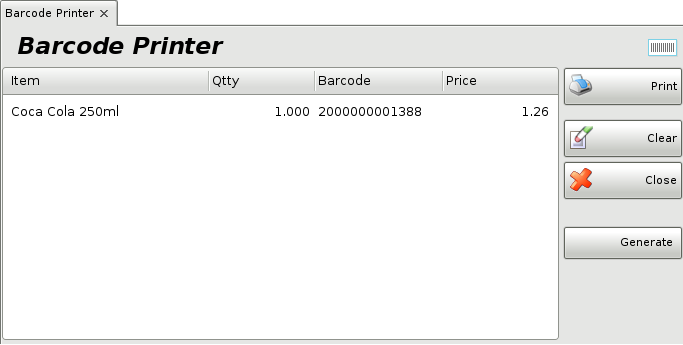
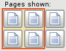

Print Barcodes
The window Print Barcodes is for creating, editing and printing of labels for your items.
The window Print Barcodes is filled in by the following way:
In the Item field fill in the items, which
will be creat a new barcode or will be edited a existing one..
To select an
item do one of the following:
- use keyboard shortcut F4 in the
items list;
- type the name of the item in the text field;
- double-click
the item in the list;
- type the code of the item in the text field;
-
type the barcode of the item in the text field.

In the field Quantity enter the number of the items, for which will be created/edited new barcode. In filed Barcode automatically is filled the created barcode. If there isn�t any, with the button Generate is generated barcode type EAN13 or EAN8. Press enter to continue in the next field � Price, where automatically will be filled the sale price of the item according to the price group of the client or the location (the client�s price is with priority). If there aren�t any price groups of the client or the location, the program will take the retail price of the item. The sale price might be edited and this change will be shown only on this document. Then press Enter for confirmation. In this way all the data is filled for every item.
When selecting the button Print, a screen is opened and the operator can enter the necessary parameters for creating/editing of barcode label. The available settings are situated in the left part of the screen and include: paper size (templates are available, but also can be customized), width, rows, space, margins (top, bottom, left, right). The created barcode label can be saved when you press the button Save and enter its name.
Button Design loads the document designer. From here you can change the view of the barcode label. It is possible also to make corrections on already existing barcode label. With the list of the tools and elements every part can be customized.
Click the  button to print the barcode.
button to print the barcode.
Click the  button to export
the barcode to diffrent formats.
button to export
the barcode to diffrent formats.
Use the  button to zoom the document from
10% to 500%.
button to zoom the document from
10% to 500%.
Click the  button to visualize the barcode document on one, two, three, four or six pages.
Click the  button to close the window.
button to close the window.
To cancel the operation, press the Esc key.
�2006-2015 Microinvest, All rights reserved